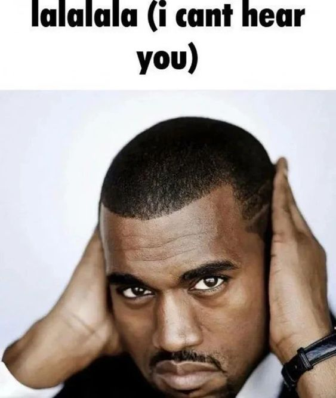

THE ART OF NOT GIVING A F*CK
- BY FELIX :3
DISCLAIMER: Not everything is written by Felix, Sources at the bottom of the page
Donations are MANDATORY, Life can be one hell of a ride, packed with challenges that often feel like they’re about to crush you. A lot of us are just trying to keep our heads above water, whether it’s because of money issues, personal crap, or the everyday chaos of modern life. It’s damn easy to feel like we’re all alone in this mess, but we can change that story. By donating to my cause, you’re not just throwing cash my way; you’re helping create a wave of kindness and community.
Your support lets me focus on what really counts, cutting down the stress that can weigh us all down. It’s your chance to be part of something bigger—a group effort to lift each other up. When you chip in, you’re not just helping me; you’re sparking a change in how we see things. You’re showing that we can care for one another and build a world where empathy and support actually mean something. It’s about smashing the cycle of indifference and building a community where we all have each other’s backs.
Let’s join forces to make a real difference. Your support means everything to me and can help ease the burden, letting me tackle life’s challenges with a bit more strength. Thanks for giving a damn about my journey.Donate
I want to make it clear that I am not responsible for the actions of anyone who chooses to follow my guide on letting go and embracing a more carefree mindset. Each individual is responsible for their own choices and behaviors, and I encourage everyone to approach this journey with personal accountability and self-reflection. My intention is to provide support and perspective, not to advocate for reckless or harmful behavior. Ultimately, how one interprets and applies this guidance is entirely up to them, and I cannot be held liable for any consequences that may arise from their decisions.
Social media has dramatically transformed the way we live, often for the worse, as it fosters a culture of comparison and constant validation. In our quest for likes and followers, we’ve become overly focused on how we present ourselves online, sacrificing authenticity for a carefully curated image. This obsession can lead to feelings of inadequacy, as we constantly measure our worth against the highlight reels of others. Moreover, the barrage of notifications and the pressure to stay connected can create an overwhelming sense of obligation, making it difficult to disconnect and prioritize our mental well-being. Ultimately, this relentless need for approval and connection through screens has distracted us from what truly matters—genuine relationships and a balanced, fulfilling life.
Not giving a fuck is all about reclaiming your time and sanity in a world full of bullshit. First off, you need to figure out what actually matters to you and ditch the rest. Stop worrying about what others think—most people are too busy with their own crap to care about yours. Set some damn boundaries; learn to say no to things that drain your energy and fill your life with negativity. If social media is making you feel like crap, cut that shit out or at least limit your time on it. Practice mindfulness to keep your head straight and focus on the present instead of getting lost in the chaos. Surround yourself with people who lift you up rather than drag you down, and don’t be afraid to embrace imperfection—everyone messes up, and that’s part of being human. Remember, life is too short to be stressed over petty shit, so focus on what brings you joy and let go of the rest. You deserve to live your life without the weight of other people's opinions holding you back!
Ignore the haters—they’re just noise in the background of your awesome life. When they throw shade, it’s because they can’t handle your ambition and drive. Don’t let their bullshit hold you back! Try as many things as you can because life is too short to be stuck in one place. Experiment, fail, and learn; that’s how you grow! Every attempt is a step closer to finding what really lights you up. So, screw the naysayers and dive into everything you want to explore. The more you try, the closer you get to finding your passion and proving the haters dead wrong!
Step 1: Define Your Values
Okay so like, first things first, you gotta figure out what really matters to you, right? Like, sit down and make a list of your vibes—family, career, whatever it is that makes your heart do a happy dance. This is your foundation, fam! Once you know what’s important, set some boundaries around that stuff. You’re not gonna waste your time on anything that doesn’t spark joy, you feel me? This way, you can focus on the things that actually matter and tell all that other noise to take a hike.
Step 2: Shift Your Mindset
Next up, you need to work on that mindset, boo! Mindfulness is the name of the game—like, just take a minute to breathe and chill. When those negative thoughts start creeping in, hit 'em with a “Nah, not today!” Ask yourself if they’re even true or just fear talking. Change your thoughts, change your life, ya know? Like, you don’t need to stress over every little thing—just keep it real and stay focused on what you can control.
Step 3: Set Clear Goals
Now, let’s talk goals. You gotta make them clear and juicy, like a good TikTok challenge! Use that SMART method—make ‘em Specific, Measurable, Achievable, Relevant, and Time-bound. Break it down into baby steps so you’re not overwhelmed. It’s like playing a video game; you level up little by little. And trust me, when you hit those milestones, you’ll feel like a total boss!
Step 4: Let Go of Perfectionism
Perfectionism? Toss that out the window! Seriously, nobody’s perfect, and trying to be just stops you from making moves. Embrace the messiness of life! Focus on progress, not perfection. Like, just take action, even if it’s a bit wonky. You’re gonna make mistakes, and that’s okay—just learn from them and keep it moving!
Step 5: Limit External Influences
You gotta protect your energy, fam! Curate your circle—surround yourself with people who hype you up instead of dragging you down. And don’t get me started on social media; it can be a total vibe killer. Limit that scrolling time, and instead, connect with real-life peeps who lift you up. You don’t need that negative energy in your life!
Step 6: Focus on Self-Improvement
Invest in yourself like you’re your own biggest fan! Read books, take courses—whatever helps you grow. It’s like leveling up in a game; you want to be the best version of yourself! Plus, don’t forget self-care! Eat right, move your body, and get enough sleep—treat yourself like the royalty you are, because you deserve it!
Step 7: Take Calculated Risks
Okay, here’s the tea: taking risks is where the magic happens! Don’t be scared of failure; it’s just a stepping stone to success. Get out of that comfort zone and try new things—whether it’s a new hobby or a project that scares you a bit. Every time you take a risk, you grow a little more, and who doesn’t want that glow-up?
Step 8: Celebrate Small Wins
You gotta celebrate those small wins like you just hit a million followers! Every little achievement counts, so take a moment to acknowledge what you’ve done. It builds that motivation and keeps you on the grind. When you celebrate, it’s like throwing a mini-party for yourself, and trust me, you need that energy boost to keep hustling!
Step 9: Stay Committed
Staying committed is key, my friend! Understand that bumps in the road are totally normal. Keep your eyes on the prize and stick to your routine. It’s like working out; some days are hard, but consistency is what gets you those gains! Remember, you’re building resilience, and each step forward is a step closer to your dreams!
Step 10: Maintain a Growth Mindset
Lastly, keep that growth mindset strong! Challenges? Bring ‘em on! See every setback as a chance to learn something new. Stay curious and surround yourself with folks who inspire you. Talk about goals, share experiences, and help each other out. The more you grow together, the stronger you all become. You got this, and it’s gonna be epic!
And also remember not to simp, even if she can't sleep go to sleep and get six to eight hours of sleep, don't forget to train hard, and embrace the pain of working out :3 Felix.
- in case you really need sources:
Sources